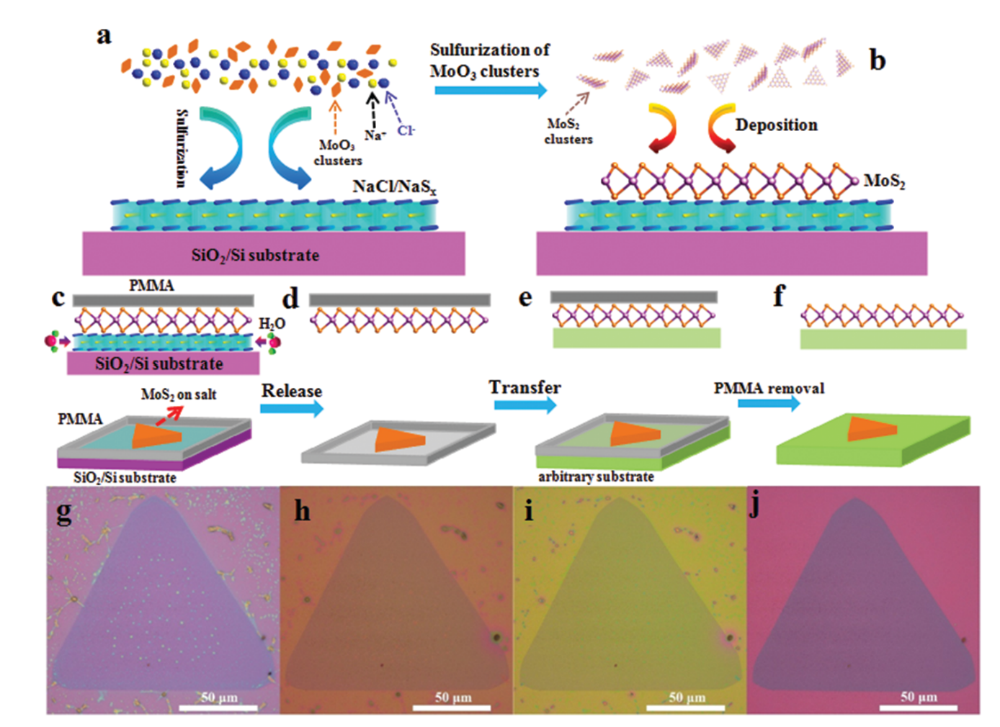

04. Damage-Free and Rapid Transfer of Two-Dimensional Materials

Lili Zhang, Chenyu Wang, Xue-Lu Liu, Tao Xu, Mingsheng Long, Erfu Liu, Chen Pan, Guangxu Su, Junwen Zeng, Yajun Fu, Yiping Wang, Zhendong Yan, Anyuan Gao, Kang Xu, Ping-Heng Tan, Litao Sun, Zhenlin Wang, Xinyi Cui, and Feng Miao [PDF]
Nanoscale 9, 19124-19130 (2017)
As one of the most important family members of two-dimensional (2D) materials, the growth and damage-free transfer of transition metal dichalcogenides (TMDs) play crucial roles in their future applications. Here, we report a damage-free and highly efficient approach to transfer single and few-layer 2D TMDs to arbitrary substrates by dissolving a sacrificial water-soluble layer, which is formed underneath 2D TMD flakes simultaneously during the growth process. It is demonstrated, for monolayer MoS2, that no quality degradation is found after the transfer by performing transmission electron microscopy, Raman spectroscopy, photoluminescence and electrical transport studies. The field effect mobility of the post-transfer MoS2 flakes was found to be improved by 2-3 orders compared with that of the as-grown ones. This approach was also demonstrated to be applicable to other TMDs, other halide salts as precursors, or other growth substrates, indicating its universality for other 2D materials. Our work may pave the way for material synthesis of future integrated electronic and optoelectronic devices based on 2D TMD materials.